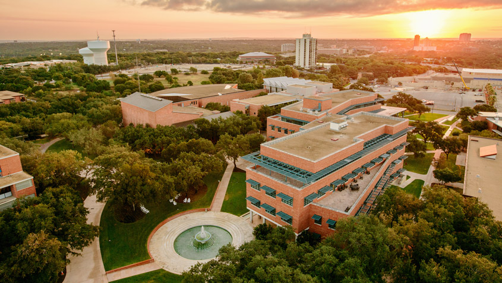

Trinity University

Trinity University sits on a beautiful campus in San Antonio. I chose to go to Trinity University because of the beautiful campus and campus life I saw while visiting campus.
The Greek Life scene was especially interesting to me and was a major reason for choosing the school.
The political science program was especially interesting to me because I had come across some of Dr Crockett's research before even becoming interested in Trinity.
All the people from my hometown who had gone to Trinity highly reocommened I do the same.
I had also been recruited by the tennis coach and felt that I would have a good place on the team.
The new addition of CSI was also very impressive, no other school I had visited had such a new and modern building on campus that wowed me the same way.
Trinity also has a considerable endowment and allowed for me to recieve a scholarship I was very happy with.
The features about Trinity that I appreciate most are the difficult classes. I chose Trinity University because I felt like it could challenge me while also benifiting my future. The curriculum is challenging and honestly I would not have stayed if I did not plan on graduate school.
I think that in the end the difficult classes I have taken will prepare me for graduate school.
I am thinking of majoring in Political Science because I find the curriculum facinating and believe it will help me in law school. Here is a link to the political scince department at Trinity.
Photo curtesy of Trinity University.
Trinity University Political Science department